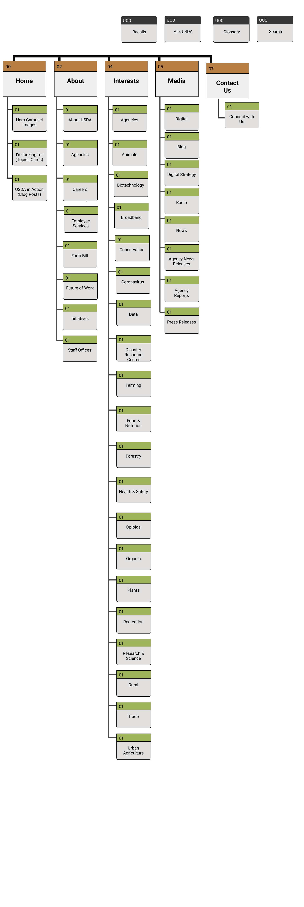
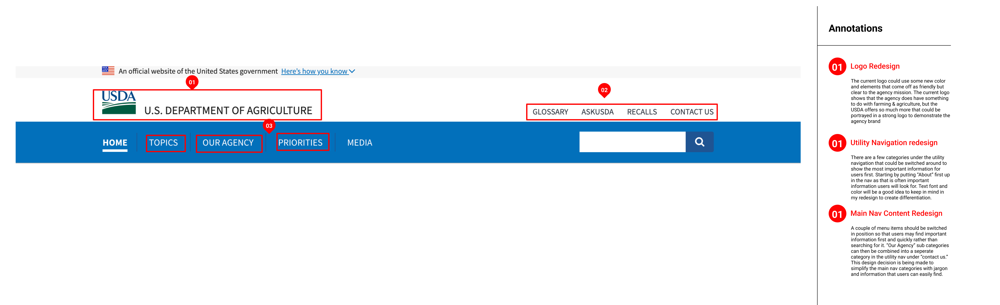
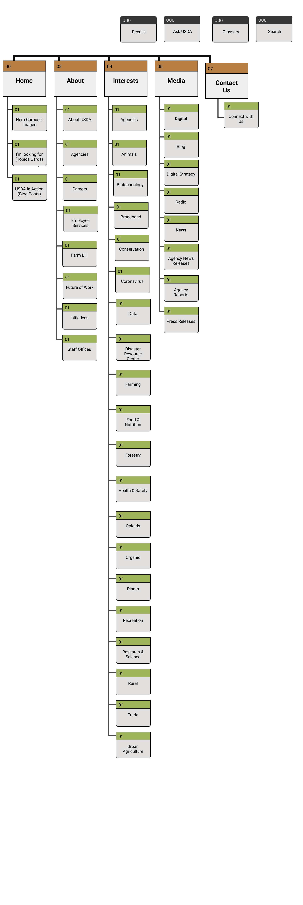
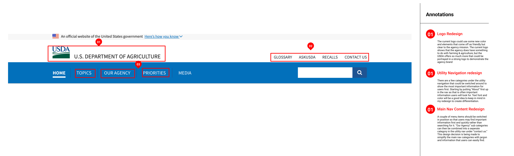

Lily wants to learn more about ways she can help her community with food & nutrition insecurity. She wants to gain clear education about this topic and find ways to help her community through spreading knowledge about this problem.

I tested the USDA website on 5 different users taking into account any challenges users might face when interacting and navigating through their website.
Objectives:
-Can users navigate the USDA website without running into navigation issues or cognitive overload?
-How intuitive is the website navigation for users to find the specific information they are searching for?
-Could users show me where on the site they would click to gather more information on tackling food and nutrition insecurity?
-Can users navigate the USDA website without running into navigation issues or cognitive overload?
-How intuitive is the website navigation for users to find the specific information they are searching for?
-Could users show me where on the site they would click to gather more information on tackling food and nutrition insecurity?
I referenced the results from the card sorting activity to identify content patterns, group like items together, and label new categories. By removing duplicate items and incorporating new categories into the primary navigation, I was able to develop a new sitemap that is more structured and complete.
 
 